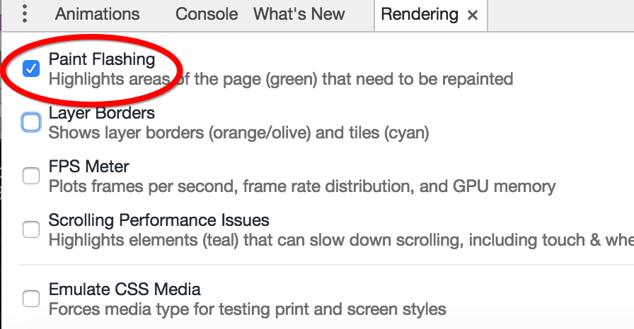
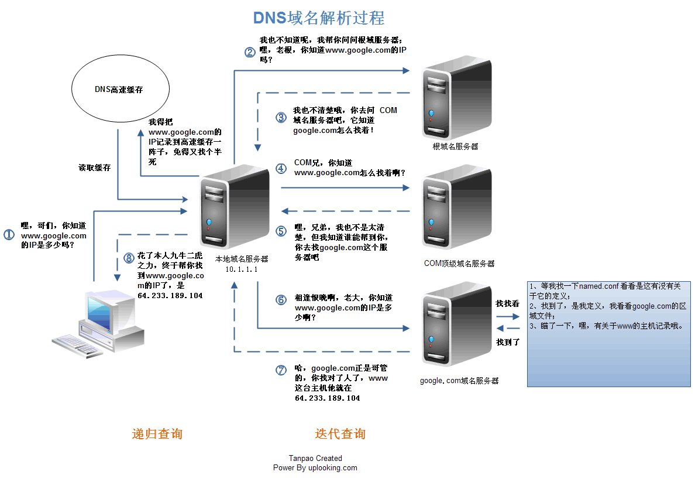

# 浏览器的组成
- 人机交互部分（UI）
- 网络请求部分（Socket）
- JavaScript 引擎部分（解析执行 JavaScript）
- 渲染引擎部分（渲染 HTML、CSS 等）
- 数据存储部分（cookie、HTML5 中的本地存储 LocalStorage、SessionStorage）
sqlite
# 主流渲染引擎
# 介绍
渲染引擎 又叫 排版引擎 或 浏览器内核。
主流的 渲染引擎 有
- Chrome 浏览器: Blink 引擎（WebKit 的一个分支）。
- Safari 浏览器: WebKit 引擎，windows 版本 2008 年 3 月 18 日推出正式版，但苹果已于 2012 年 7 月 25 日停止开发 Windows 版的 Safari。
- FireFox 浏览器: Gecko 引擎。
- Opera 浏览器: Blink 引擎 (早期版使用 Presto 引擎）。
- Internet Explorer 浏览器: Trident 引擎。
- Microsoft Edge 浏览器: EdgeHTML 引擎（Trident 的一个分支）。
# 工作原理
解析 HTML 构建 Dom 树（Document Object Model，文档对象模型），DOM 是 W3C 组织推荐的处理可扩展置标语言的标准编程接口。
构建渲染树，渲染树并不等同于 Dom 树，因为像
head标签 或 display: none这样的元素就没有必要放到渲染树中了，但是它们在 Dom 树中。对渲染树进行布局，定位坐标和大小、确定是否换行、确定 position、overflow、z-index 等等，这个过程叫
"layout" 或 "reflow"。绘制渲染树，调用操作系统底层 API 进行绘图操作。
# 渲染引擎工作原理示意图
渲染引擎工作原理示意图

WebKit 工作原理（Chrome、Safari、Opera）

Gecko 工作原理（FireFox）

# 浏览器的 reflow 或 layout 过程
https://www.youtube.com/watch?v=ZTnIxIA5KGw
# 打开 Chrome 的 Rendering 功能
第一步：

第二步：

# 浏览器访问网站过程
- 在浏览器地址栏中输入网址。
- 浏览器通过用户在地址栏中输入的 URL 构建 HTTP 请求报文。
GET / HTTP/1.1 | |
Host: www.taobao.com | |
Connection: keep-alive | |
Upgrade-Insecure-Requests: 1 | |
User-Agent: Mozilla/5.0 (Windows NT 10.0; Win64; x64) AppleWebKit/537.36 (KHTML, like Gecko) Chrome/57.0.2987.133 Safari/537.36 | |
Accept: text/html,application/xhtml+xml,application/xml;q=0.9,image/webp,*/*;q=0.8 | |
Accept-Encoding: gzip, deflate, sdch, br | |
Accept-Language: zh-CN,zh;q=0.8,en;q=0.6 | |
Cookie: l=Ag0NWp9E8X4hgaGEtIBhOmKxnSOH6kG8; isg=AkZGLTL-Yr9tHDZbgd5bsn4Rlzwg5IphaK-1BzBvMmlEM-ZNmDfacSyDfdgF; thw=cn |
- 浏览器发起 DNS 解析请求，将域名转换为 IP 地址。
- 浏览器将请求报文发送给服务器。
- 服务器接收请求报文，并解析。
- 服务器处理用户请求，并将处理结果封装成 HTTP 响应报文。
HTTP/1.1 200 OK | |
Server: Tengine | |
Date: Thu, 13 Apr 2017 02:24:25 GMT | |
Content-Type: text/html; charset=utf-8 | |
Transfer-Encoding: chunked | |
Connection: keep-alive | |
Vary: Accept-Encoding | |
Vary: Ali-Detector-Type, X-CIP-PT | |
Cache-Control: max-age=0, s-maxage=300 | |
Via: cache8.l2cm10-1[172,200-0,C], cache13.l2cm10-1[122,0], cache3.cn206[0,200-0,H], cache6.cn206[0,0] | |
Age: 293 | |
X-Cache: HIT TCP_MEM_HIT dirn:-2:-2 | |
X-Swift-SaveTime: Thu, 13 Apr 2017 02:19:32 GMT | |
X-Swift-CacheTime: 300 | |
Timing-Allow-Origin: * | |
EagleId: 9903e7e514920502659594264e | |
Strict-Transport-Security: max-age=31536000 | |
Content-Encoding: gzip | |
<!DOCTYPE html> | |
<html lang="zh-CN"> | |
<head> | |
<meta charset="utf-8" /> | |
<meta http-equiv="X-UA-Compatible" content="IE=edge,chrome=1" /> | |
<meta name="renderer" content="webkit" /> | |
<title>淘宝网 - 淘！我喜欢</title> | |
<meta name="spm-id" content="a21bo" /> | |
<meta name="description" content="淘宝网 - 亚洲较大的网上交易平台，提供各类服饰、美容、家居、数码、话费/点卡充值… 数亿优质商品，同时提供担保交易(先收货后付款)等安全交易保障服务，并由商家提供退货承诺、破损补寄等消费者保障服务，让你安心享受网上购物乐趣！" /> | |
<meta name="aplus-xplug" content="NONE"> | |
<meta name="keyword" content="淘宝,掏宝,网上购物,C2C,在线交易,交易市场,网上交易,交易市场,网上买,网上卖,购物网站,团购,网上贸易,安全购物,电子商务,放心买,供应,买卖信息,网店,一口价,拍卖,网上开店,网络购物,打折,免费开店,网购,频道,店铺" /> | |
</head> | |
<body> | |
...... | |
</body> | |
</html> |
- 服务器将 HTTP 响应报文发送给浏览器。
- 浏览器接收服务器响应的 HTTP 报文，并解析。
- 浏览器解析 HTML 页面并展示，在解析 HTML 页面时遇到新的资源需要再次发起请求。
- 最终浏览器展示出了页面
# HTTP 请求报文和响应报文格式

# DNS 解析过程

# windows 下 hosts 文件位置
C:\Windows\System32\drivers\etc\hosts
# DOM 解析
参考代码:
<html> | |
<body> | |
<p>Hello World</p> | |
<div> <img src="example.png" alt="example"/></div> | |
</body> | |
</html> |

# Webkit CSS 解析

# How Browsers work - 浏览器是如何工作的
How Browsers work
https://www.html5rocks.com/zh/tutorials/internals/howbrowserswork/